항공산업기사 (2006-05-14 기출문제)
1과목: 항공역학
1. 프로펠러 슬립(propeller slip)을 가장 올바르게 표현한 것은?
- [고 피치/저 피치 각] × 100
- 진행율 / 프로펠러 효율
- [(기하학적 피치-유효 피치)/기하학적 피치] × 100
- [(유효 피치-기하학적 피치)/유효피치] × 100
(정답률: 84%)

2. 제트 항공기가 최대 항속거리로 비행하기 위한 조건은? (단, 연료소비율은 일정)
- (CL1/2 / CD) 최대 및 고고도
- (CL1/2 / CD) 최대 및 저고도
- (CL/ CD) 최대 및 고고도
- (CL/ CD) 최대 및 저고도
(정답률: 71%)
3. 항공기의 동적안정성이 (+)인 상태를 설명한 것으로 가장 올바른 것은?
- 운동의 진폭이 시간에 따라 점차 감소한다.
- 운동의 진폭이 점차 감소하며 비행기 기수가 점점 내림 현상을 갖는다.
- 운동의 진폭이 시간에 다라 점차 증가한다.
- 운동의 진폭이 점차 증가하며 비행기 기수가 점점 올림 현상을 갖는다.
(정답률: 74%)
4. 활공비행에서 활공각을 나타내는 식으로 가장 올바른 것은? (단, ⍬ = 활공각, CL = 양력게수, CD = 항력 계수, T = 추력,W = 항공기무게)
- sin ⍬ = CL/ CD
- cos ⍬= W / CL
- tan ⍬ = CD / CL
- tan ⍬= CL/ CD
(정답률: 61%)
5. ( ) 안에 가장 알맞은 것은?
- 밀도
- 온도
- 압력
- 점성력
(정답률: 72%)
6. 비행기 날개의 가로 세로비(종횡비)가 커졌을 때 다음 중 가장 올바른 내용은?
- 유도항력이 감소한다.
- 유도항력이 증가한다.
- 양력이 감소한다.
- 스팬효율과 양력이 증가한다.
(정답률: 59%)
7. 날개의 뒤젖힘각 효과(sweepback effect)에 대한 설명으로 가장 올바른 것은?
- 방향안정(directional stability)에는 영향이 있지만 가로안정(lareral stability)에는 영향이 없다.
- 가로안정(lareral stability)에는 영향이 있지만 방향안정(directional stability)에는 영향이 없다.
- 방향안정(directional stability)과, 가로안정(lareral stability)모두에 영향이 있다.
- 방향안정(directional stability)과, 가로안정(lareral stability)모두에 영향이 없다.
(정답률: 77%)
8. 비행기의 날개에 사용되는 에어포일(Airfoil)의 요구조건으로 가장 올바른 것은?
- 얇은 날개골은 받음각이 작을 때 항력이 크다.
- CL 특히 CL max 가 클 것
- CD 특히 CD max 가 클 것
- 앞전 반경은 클수록 좋다.
(정답률: 78%)
9. 항공기 왕복기관의 상승비행에 대한 설명으로 가장 올바른 것은?
- 이용마력과 필요마력이 같다.
- 이용마력이 필요마력보다 크다.
- 이용마력이 필요마력보다 적다.
- 필요마력의 1.5배에 이르렀을 때에 상승비행이 가능 하다.
(정답률: 83%)
10. 공력 평균시위(MAC)에 대한 설명으로 가장 거리가 먼 내용은?
- 이것은 날개를 가상적으로 직사각형 날개라고 가정했을때의 시위이다.
- 꼬리날개와 착륙장치의 비치 및 중심위치의 이동범위 등을 고려할 때 이용된다.
- 실용적으로는 날개 모양에 면적 중심을 통과하는 기하학적 평균시위를 말한다.
- 중심위치가 MAC의 25%라는 것은 중심이 뒷전으로부터 25%가 되는 점이다.
(정답률: 72%)
11. 항공기 날개의 시위 길이가 5m, 대기속도가 360km/h, 동점성 계수가 0.2cm2/sec 일 때 레이놀즈수 (R.N)는 얼마인가?
- 2.5 × 106
- 2.5 × 107
- 5 × 106
- 5 × 107
(정답률: 74%)
12. 무게 100kgf 인 비행기가 해발고도 위를 수평 등속비행하고있다. 날개면적이 5m2 이면 최소속도는 얼마인가? (단, CL max = 1.2, 밀도 ρ = 1/8 kgf・sec2/m4)
- 160.33 (m/sec)
- 16.33 (m/sec)
- 1.629 (m/sec)
- 26.29 (m/sec)
(정답률: 75%)
13. 조종면에서 앞전 밸런스(leading edge balance)를 설치하는 가장 큰 목적은?
- 양력 증가
- 조종력 경감
- 항력 감소
- 항공기 속도 증가
(정답률: 82%)
14. 항공기의 비행방향에 대해서 양력과 중력이 같고 추력과 항력이 동일하다면 항공기의 운동은?
- 공중에 정지한다.
- 수평 가속비행을 한다.
- 수평 등속비행을 한다.
- 등속 상승비행을 한다.
(정답률: 92%)
15. 비행기 날개에 작용하는 공기력은 무엇에 비례하는가? (단, ρ : 공기밀도, μ : 공기의 절대 점성계수, S : 프로펠러 깃의 면적, V : 프로펠러의 속도 )
- μSV2
- μV2 / S
- ρSV2
- ρV2 / S
(정답률: 65%)
16. 비행기의 가로안정에 날개가 가장 중요한 요소이다. 가로 안정을 유지시키는 가장 좋은 방법은?
- 날개의 캠버를 크게 한다.
- 날개에 쳐든각(diheadral angle)을 준다.
- 날개의 시위선을 최대로 한다.
- 밸런스 탭(balance tab)을 장착한다.
(정답률: 80%)
17. 전진하는 헬리콥터의 주 회전 날개에 있어서 전진 및 후진깃의 양력차를 보정하기 위한 방법으로 가장 올바른 것은?
- 페더링 힌지에 의해 조정
- 플래핑 힌지에 의해 조정
- 주회전날개의 전단 힌지에 의한 조정
- 항력 힌지에 의한 조정
(정답률: 64%)
18. 프로펠러의 효율에 대한 설명 내용으로 가장 옳은 것은?
- 프로펠러의 효율을 좋게 하기 위해서 진행율이 작을 때는 깃각을 크게 해야 한다.
- 비행기가 이륙하거나 상승 시에는 깃각을 크게 해야 한다.
- 비행속도가 증가하면 깃각이 작아져야 한다.
- 비행중 프로펠러 깃각이 변하는 가변피치 프로펠러를 사용하면 프로펠러 효율이 좋다.
(정답률: 70%)
19. 헬리콥터에서 필요마력을 구성하는 마력과 가장 관계가 먼 것은?
- 유도항력마력
- 형상항력마력
- 조파항력마력
- 유해항력마력
(정답률: 72%)
20. 총 중량이 5200kgf 인 비행기가 선회각 30˚로 정상선회를 하고 있을 때, 이 비행기에 작용하는 원심력은 약 얼마인가? (단, sin 30˚ = 0.5, cos 30˚ = 0.866, tan 30˚= 0.577)
- 2600kgf
- 3000kgf
- 4503kgf
- 5200kgf
(정답률: 56%)
2과목: 항공기관
21. 추력 비연료소비율(TSFC)에 대한 설명 중 틀린 것은?
- 1kg의 추력을 발생하기 위하여 1초 동안 기관이 소비하는 연료의 중량을 말한다.
- 추력 비연료소비율이 작을수록 기관의 효율이 높다.
- 추력 비연료소비율이 작을수록 기관의 성능이 우수하다.
- 추력 비연료소비율이 작을수록 경제성이 좋다.
(정답률: 70%)
22. 가스터빈 기관의 시동기 중 가장 가볍고 간단한 것은?
- 공기충돌식 시동기
- 공기터빈 시동기
- 가스터빈식 시동기
- 유압식 시동기
(정답률: 45%)
23. 후기 연소기(after burner)의 4가지 기본 구성품으로 가장 올바른 것은?
- main flame, fuel spray bar, flame holder, variable area nozzle.
- afterburner duct, fuel spray bar, flame holder, variable area nozzle.
- afterburner duct, main flame, flame holder, variable area nozzle.
- afterburner duct, fuel spray bar, main flame, variable area nozzle.
(정답률: 67%)
24. 가스터빈 엔진에서 연료조절장치(fuel control unit)가 받는 기본 입력자료로 가장 거리가 먼 것은?
- 파워레버 위치(PLA)
- 압축기 입구온도(CIT)
- 압축기 출구압력(CDP)
- 배기가스 온도(EGT)
(정답률: 64%)
25. 체적 10L 속의 완전기체가 압력 760mmHg 상태에 있다. 만약 체적이 20L 로 단열팽창하였다면 압력은 얼마로 변화하겠는가? (단, 이 경우 비열비 k=1.4 로 한다.)
- 217mmHg
- 288mmHg
- 302mmHg
- 364mmHg
(정답률: 54%)
26. 에너지 보존 법칙과 가장 관계가 깊은 것은?
- 열역학 제 1 법칙
- 열역학 제 2 법칙
- 열역학 제 3 법칙
- 열역학 제 4 법칙
(정답률: 79%)
27. 제트엔지의 연소실 형식으로 구조가 간단하고, 길이가 짧으며 연소실 전면 면적이 좁으며, 연소효율이 좋은 연소실 형식은?
- Can 형
- Tubular 형
- Annular 형
- Cylinder 형
(정답률: 78%)
28. 정속 프로펠러(constant speed propeller)에 대하여 가장 올바르게 설명한 것은?
- 저 피치(low pitch)와 고피치(high pitch)인 2개의 위치만을 선택할 수 있다.
- 3방향 선택밸브(3way valve)에 의해 피치가 변경된다.
- 자유롭게 피치를 조정 할 수 있다.
- 깃각(blade angle)이 하나로 고정되어 피치 변경이 불가능 하다.
(정답률: 61%)
29. 터보 팬 기관에서 BPR(by-pass ratio)를 가장 올바르게 설명한 내용은?
- 흡입된 전체의 공기 유량과 배출된 전체의 유량의 비
- 2차 공기의 흡입된 량과 2차 공기의 방출된 공기량의 비
- 압축기를 통과한 공기의 유량과 터빈을 통과한 유량의 비
- 압축기를 통과한 공기의 유량과 팬을 통과한 공기 유량의 비
(정답률: 55%)
30. 가스터빈 기관의 윤활유 조건으로 가장 관계가 먼 것은?
- 인화점이 낮아야 한다.
- 점도지수가 높아야 한다.
- 기화성은 낮아야 한다.
- 산화 안정성 및 열적 안정성이 높아야 한다.
(정답률: 75%)
31. 유압 리프터(hydraulic valve lifter)를 사용하는 수평 대향형 엔진에서 밸브 간극을 조절하려면 어떻게 해야 하는가?
- 로커 아암(rocker arm)을 조절
- 로커 아암(rocker arm)을 교환
- 푸시로드(push rod)를 교환
- 밸스 스템(stem) 심(sim)으로 조정
(정답률: 47%)
32. 왕복엔진의 저속(idle)에서 혼합기가 너무 희박할 때 발생하는 가장 중요한 현상은 무엇인가?
- 점화플러그에 탄소가 침착됨
- 출력이 급격히 증가
- 엔진 rmp 이 상승
- 시동시 역화가 발생하며 흡기계통의 화재발생 원인
(정답률: 70%)
33. 마그네토 브레이커 포인트 캠(magneto breaker point cam)축의 회전속도(r)을 나타낸 식은? (단, n: 마그네토의 극수, N: 실린더 수이다.)
- r = N / n
- r = N / n+1
- r = N / 2n
- r = N + 1 / 2n
(정답률: 63%)
34. 프로펠러 깃(blade)의 선단(tip)이 앞으로 휘게(bend)하는 가장 큰 힘은?
- 토크 - 굽힘(torque-bending)력
- 공력 - 비틀림(aerodynamic-twisting)력
- 원심 - 비틀림(centrifugal-twisting)력
- 추력 - 굽힘(thrust-bending)력
(정답률: 48%)
35. 피스톤 엔진 실린더 내벽의 크롬 도금에 대한 설명으로 가장 올바른 것은?
- 실린더 내벽의 열팽창을 크게 한다.
- 실린더 내벽의 표면을 경화시킨다.
- 청색 표시를 한다.
- 반드시 크롬 도금한 피스톤 링을 사용한다.
(정답률: 79%)
36. 온도 TH 인 고열원과 TC인 저열원 사이에서 열량 QH를 받아 QC를 방출하여서 작동하고 있는 카르노(carnot)싸이클이 있다. 열효율을 가장 올바르게 표현한 것은?
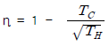
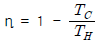
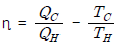
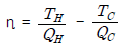
(정답률: 53%)
37. 그림은 브레이톤 사이클(Brayton Cycle)을 나타낸 것이다. 연소과정을 나타내는 부분은?
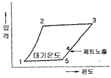
- 1 - 2
- 2 - 3
- 3 - 4
- 4 - 5
(정답률: 82%)
38. 왕복기관에서 둘 또는 그 이상의 밸브 스프링(valve spring)을 사용하는 가장 큰 이유는?
- 밸브 간격을 “0”으로 유지하기 위하여
- 한개의 밸브스프링(valve spring)이 파손될 경우에 대비하기 위하여
- 축을 감소시키기 위하여
- 밸브의 변형을 방지하기 위하여
(정답률: 77%)
39. 피스톤(Piston)의 상사점과 하사점 사이의 거리는?
- 보어(Bore)
- 행정거리(Stroke)
- 론저론(longeron)
- 벌크헤드(bulkhead)와 론저론(longeron)
(정답률: 86%)
40. 원심형 압축기(centrifugal type compressor)의 가장 큰 장점은 무엇인가?
- 단당 압력비가 높다
- 장착이 쉽고 전체 압력비를 높게 할 수 있다.
- 기관의 단위 전면 면적당 추력이 크다.
- 가볍고 효율이 높기 EOans에 고성능기관에 적합하다.
(정답률: 62%)
3과목: 항공기체
41. 강(AISI 4340)으로 된 봉의 바깥지름이 1cm 이다. 인장하중 10t 이 작용할 때 이 봉의 인장강도에 대한 안전 여유는 얼마인가? (단, AISI 4340 의 인장강도 σT= 18,000kg/cm2 이다.)
- 0.16
- 0.37
- 0.41
- 0.72
(정답률: 35%)
42. 항공기의 기체구조 수리에 대한 내용으로 가장 올바른 것은?
- 같은 enRP의 재료로써 17ST의 판재나 리벳트를 A17ST로 대체하여 사용할 수 있다.
- 수리부분의 원래 재료와의 접촉면에는 재료의 성분에 관계없이 부식방지를 위하여 기름으로 표면 처리한다.
- 사용 리벳트 수는 같은 재질로 기체의 강도를 고려하여 최소한의 수를 사용한다.
- 수리를 위하여 대치할 재료의 두께는 원래 두께와 같거나 작아야 한다.
(정답률: 70%)
43. 아래 V-n 선도에서 AD선은 무엇을 나타내는 것인가?
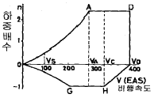
- “+” 방향에서 얻어지는 하중배수
- “-” 방향에서 얻어지는 하중배수
- 최소제한 하중배수
- 최대제한 하중배수
(정답률: 87%)
44. 비파괴시험 중 자분이 필요한 시험방법은?
- 자기탐상법
- 초음파탐상법
- 침투탐상법
- 방사선탐상법
(정답률: 81%)
45. 경비행기의 뼈대 재료로서 잘 쓰이는 SAE 4130이란 재료는 몇 %의 탄소를 함유하는가?
- 0.03%
- 0.3%
- 3%
- 30%
(정답률: 69%)
46. 세미모노코크 동체의 강도에 미치는 부재와 가장 관계가 먼 것은?
- 스트링어 (stringer)
- 다이아고날 웨브 (diagonal web)
- 론저론 (longeron)과 프레임 (frame)
- 벌크헤드 (bulkhead)와 론저론 (longeron)
(정답률: 82%)
47. 일명 “케블라”라 불리며, 비중이 작으므로 구조물의 경량화를 위하여 사용량이 증가 되고 있는 복합재료는?
- 아라미드섬유
- 열경화성수지
- 유리섬유
- 세라믹
(정답률: 83%)
48. 항공기 기체수리 작업시 리벳팅 하기 전에 임시 고정하는데 사용하는 공구는?
- 캠-록 파스너
- 딤플링
- 스퀴즈
- 시트 파스너
(정답률: 70%)
49. 그림에서 평균공기학적 시위(mean aerodynamic chord)의 백분율로 C.G(center of gravity) 위치를 계산하면?
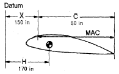
- 15%
- 20%
- 25%
- 30%
(정답률: 79%)
50. 탄성계수 E, 포아송의 비 V, 전단 탄성계수 G 사이의 관계식으로 가장 올바른 것은?
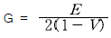
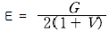
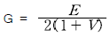
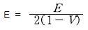
(정답률: 45%)
51. 조종 케이블(Control Cable)에 대한 설명 중 가장 거리가 먼 내용은?
- 케이블의 기본 구성품은 와이어 이다.
- 케이블의 규격은 지름으로 정한다.
- 주 조종 계통에는 지름이 1/8 인치 이하의 케이블을 사용한다.
- 일반적으로 케이블의 재료는 탄소강과 내식강이다.
(정답률: 75%)
52. AN 3 DD - 6 볼트의 규격 중 3은 무엇을 나타내는가?
- 재질 (2024T)
- 지름(3/16in)
- 그립의 길이
- 볼트의 길이
(정답률: 81%)
53. 알루미늄의 표면에 인공적으로 얇은 산화피막을 형성하는 방법은?
- 파커라이징
- 아노다이징
- 카드뮴 도금 처리
- 주석 도금 처리
(정답률: 85%)
54. 산소 아세틸렌 용접시, 불꽃의 용도에 대한 설명 중 가장 거리가 먼 내용은?
- 탄화불꽃 : 스테인레스강, 알루미늄
- 산성불꽃 : 아연도금, 티타늄
- 중성불꽃 : 연강, 니크롬강
- 산화불꽃 : 황동, 청동
(정답률: 48%)
55. 요구되는 중심의 평형을 얻기 위하여 항공기에 설치하는 모래주머니, 납봉, 납판 등을 무엇이라 하는가?
- 유상하중(pay lord)
- 테어무게(tare weight)
- 평형무게(balance weight)
- 밸러스트(ballast)
(정답률: 72%)
56. 트레일링 에이지 플랩(trailing edge flap)의 설명 중 가장 관계가 먼 내용은?
- 비행기의 양력을 일시적으로 증가 시킨다.
- 착륙 거리를 감소시킨다.
- 이륙 거리를 짧게 한다.
- 보조날개 바깥쪽에 설치되어 있고 힌지로 지탱된다.
(정답률: 51%)
57. 조종면의 평형(balancing)에서 동적평형(dynamic balance)이란?
- 물체가 자체의 무게중심으로 지지되고 있는 상태
- 조종면을 어느 위치에 돌려 놓거나 회전 모멘트가 영(zero)으로 평형이 되는 상태
- 조종면을 평형대 위에 장착하였을 때 수평위치에서 조종면의 뒷전이 밑으로 내려가는 상태
- 조종면을 평형대 위에 장착하였을 때 수평위치에서 조종면의 뒷전이 위로 올라가는 상태
(정답률: 79%)
58. 항공기 외피용으로 적합하며, 플러시 헤드 리벳트(flush headrivet)라 부르는 것은?
- 납작머리 리벳트(flat rivet)
- 유니버샬 리벳트(universal rivet)
- 접시머리 리벳트(counter sunk rivet)
- 둥근머리 리벳트(round head rivet)
(정답률: 68%)
59. 항공기용 Nut의 취굽방법에 대한 설명 중 가장 거리가 먼 내용은?
- Nut는 사용되는 장소에 따라 강도, 내식, 내열에 적합한 부품 번호의 Nut를 사용하여야 한다.
- 셀프 락킹(locking) Nut를 Bolt에 장착하였을 때는 Bolt 나사 끝 부분이 2나사이상 나와 있어야 한다.
- 셀프 락킹(lockong Nut의 느슨함으로 인한 Bolt의 결손이 비행의 안전성에 영향을 주는 장소에는 사용하여서는 안된다.
- 셀프 락킹(locking) Nut를 이용하여 토크를 걸 때에는 Nut의 규정 토크값 만을 정확히 적용한다.
(정답률: 45%)
60. 항공기 타이어의 정비사항으로 가장 거리가 먼 내용은?
- 타이어 압력은 최소한 일주일에 한번 이상 측정한다.
- 공기압력은 반드시 타이어가 뜨거울 때 측정한다.
- 비행후 최소 2시간 이후에 타이어 공기압력을 측정한다.
- 비행전에도 타이어의 공기압력을 측정하여야 한다.
(정답률: 84%)
4과목: 항공장비
61. 대형 항공기의 공기조화 계통에서 가열 계통에는 연소가열기를 장치하여 사용한다. 온도가 규정값 이상에 도달하게 되면 연소가열에 공급되는 연료를 자동차단 시킬 수 있는 밸브 장치는?
- 솔레노이드 밸브
- 조정유닛 밸브
- 스필 밸브
- 버터플라이식 밸브
(정답률: 72%)
62. 전동기에서 자장의 방향과 전류의 방향을 알고 있을 때 도체의 운동(힘) 방향을 알 수 있는 법칙은?
- 렌즈의 법칙
- 페러데이 법칙
- 플레밍의 왼손법칙
- 플레밍의 오른손 법칙
(정답률: 64%)
63. 전파 고도계를 가장 올바르게 설명한 것은?
- 항공기에서 지표를 항하여 전파를 발사하여 그 반사파가 되돌아올 때 까지의 전압을 측정
- 항공기에서 지상까지의 기압고도를 측정
- 항공기에서 지표를 향하여 전파를 발사하여 그 반사파가 되돌아올 때 까지의 시간을 측정
- 항공기에서 지상까지의 밀도고도를 측정
(정답률: 85%)
64. 항공기용 축전지에 적용하는 방전율(dischrge rate)은?
- 1시간 방전율
- 3시간 방전율
- 5시간 방전율
- 8시간 방전율
(정답률: 60%)
65. 8[kΩ]의 저항에 50[mA]의 전류를 흘리는 데 필요한 전압[V]은 얼마인가?
- 360
- 380
- 400
- 420
(정답률: 82%)
66. 직류 전동기는 그 종류에 따라 부하에 대한 토크 특성이 다른데, 정격이상의 부하에서 토크가 크게 발생하여 왕복기관의 시동기에 가장 적합한 것은?
- 분권식(shunt-wound)
- 복권식(compound-wound)
- 직권식(series-wound)
- 유도식(induction type)
(정답률: 76%)
67. 자이로의 강직성에 대한 설명으로 가장 올바른 것은?
- ROTOR의 회전속도가 큰 만큼 강하다.
- ROTOR의 회전속도가 큰 만큼 약하다.
- ROTOR의 질량이 회전축에서 멀리 분포하고 있는 만큼 약하다.
- ROTOR의 질량이 회전축에서 가까이 분포하고 있는 만큼 강하다.
(정답률: 73%)
68. 종합계기 PFD에 Display 되지 않은 계기는?
- Marker beacon (M/B)
- Very high frequency (VHF)
- Instrument Landing System (ILS)
- Altimeter
(정답률: 63%)
69. 장거리 통신에 가장 적합한 장치는?
- HF 통신 장치
- VHF 통신 장치
- UHF 통신 장치
- SHF 통신 장치
(정답률: 78%)
70. 대형 항공기 공압 계통에서 공통 매니폴트(Manifold)에 공급되는 공기의 온도조절은 주로 어느 것에 의해 이루어 지는가?
- 팬 에어(Fan Air)
- 열 교환기(Heat Exchanger)
- 램 에어(Ram Air)
- 브리딩 에어(Bleeding Air)
(정답률: 60%)
71. 연속 이송형 펌프(Constant Delivery Pump)를 장착한 유압계통에서 계통 내의 유압이 사용되지 않고 있다면 어떤 구성품에 의해 작동유가 순환되는가?
- 압력 릴리프 밸브
- 셔틀 밸브
- 압력 조정기
- 디브스터 밸브
(정답률: 25%)
72. 항공기 유압회로에서 가장 높은 압력으로 setting 된 밸브는?
- 퍼지 밸브(Purge valve)
- 시퀀스 밸브(Sequence valve)
- 첵크 벨브(Check valve)
- 릴리프 밸브(Relief valve)
(정답률: 72%)
73. 교류 발전기의 출력 주파수를 일정하게 유지시키는 데 사용되는 것은?
- magamp
- brushless
- carbon pile
- constant speed drive
(정답률: 80%)
74. 비행 중에는 조종실 내의 운항 승무원 상호간에 통화를 하며, 지상에서는 항공기가 Taxing하는 동안에 지상 조업요원과 조종실 내의 운항 승무원간에 통화하는 인터폰은?
- Passenger 인터폰
- Cabin 인터폰
- Service 인터폰
- Flight 인터폰
(정답률: 62%)
75. 비행 중에 비로부터 시계를 확보하기 위한 제우 장치(RainProtection) 시스템과 거리가 먼 것은?
- Windshield Wiper System
- Air Curtain System
- Rain Repellent System
- Windshield Washer System
(정답률: 80%)
76. 다음의 열기전력을 이용할 수 있는 금속의 구성 중 가장 높은 고온을 측정할 수 있는 것은?
- 크로멜-철
- 철-동
- 크로멜-알루멜
- 알루멜-콘스탄탄
(정답률: 70%)
77. 공함(collapsible chamber)계기에 대한 설명으로 가장 거리가 먼 내용은?
- 공함은 압력을 기계적 변위로 바꾸어 주는 장치이다.
- 속이 진공인 공함을 다이어프램(diaphram)이라 한다.
- 공함 재료로는 베릴륨-구리 합금이 쓰인다.
- 공함 계기로는 고도계, 승강계, 속도계 등이 있다.
(정답률: 46%)
78. 고도계의 오차와 가장 관계가 먼 것은?
- 북선오차
- 기계오차
- 온도오차
- 탄성오차
(정답률: 80%)
79. 싱크로 계기에 속하지 않는 것은?
- 직류셀신(D.C selsyn)
- 오토신(autosyn)
- 동기계(synchroscope)
- 마그네신(magnesyn)
(정답률: 56%)
80. 항공기의 제빙 장치에 사용되는 화학물질은?
- 가성소다
- 알콜
- 솔벤트
- 벤젠
(정답률: 67%)